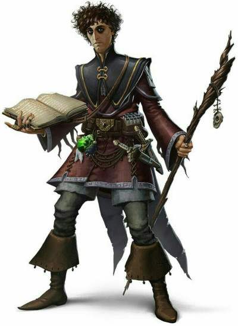
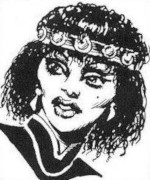
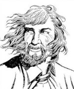

Académie tolérée de magie
L'Académie tolérée de magie, fondée en 588 par la magicienne Trudi Canavan, est située au bas du pic de la tour mineure. Simple école dédiée aux arcanes à l'origine, au fil des neuf siècles de son existence l'académie est devenue un haut lieu de la magie dans toute la région et la plupart des magiciens du royaume des Deux lacs en sont issus.
Études
L'académie compte en permanence un tout petit peu moins d'une centaine d'étudiants (à comparer aux deux cents étudiants de l'Université Matérialiste Universelle et aux plus de mille étudiants en théologie des temples), filles et garçons d'entre 17 et 22 ans généralement, inscrits à la formation qui dure de 3 et 5 ans. Chaque année entrent deux nouvelles promotions, celle d'été (au mois de Cuivrechamps) et celle d'hiver (au mois de Grise lumière), avec de 9 à 12 élèves par promotion durant les trois premières années, moins ensuite. Les cours sont impartis six jours par semaine, les élèves ne disposant donc que d'un seul jour de repos hebdomadaire. Les études coûtent cher, très cher (compter 900 pièces d'or par semestre), mais dans chaque promotion sont réservées une ou deux places pour des élèves prometteurs dont la famille est loin d'avoir les ressources nécessaires. Pour ces élèves, appelés les « pro bono », l'ensemble du cursus est gratuit tant que les résultats sont là.
À la fin de chaque semestre a lieu un examen pour valider le passage au niveau supérieur. En cas d'échec, c'est le redoublement, ou l'exclusion automatique dans le cas particulier des pro bono. À l'inverse, il arrive quelques fois que des étudiants particulièrement brillants sautent un semestre. Il est aussi possible de payer aux professeurs des cours particuliers.
Dès son entrée à l'académie, chaque étudiant se voit assigner un tuteur par la directrice. Ce tuteur est l'un de ses professeurs et il suivra le développement personnel de l'élève durant toutes ses études. Notons ici qu'une forte compétition existe entre les étudiants, et qu'il n'est pas rare d'en voir certains saboter le travail des autres.
Cycle d'initiation
Les trois premières années, qui sont un tronc commun pour tous les magiciens, forment le Cycle d'initiation. Ces étudiants sont appelés des novices. L'académie enseigne bien évidement tout au long de ces trois années la magie des arcanes, mais également diverses matières de culture générale comme l'histoire, l'alchimie, la calligraphie, l'astronomie ou bien encore l'occulte, et même la religion. On martèle en effet aux novices que le plus important pour un mage n'est pas la maîtrise de soi, la force ni même le talent, mais la connaissance.
À Laelith il est de coutume que le premier tour de magie mineur qu’apprennent les étudiants consiste à allumer une bougie. Ils en sont normalement capables dès le premier mois, mais il leur faudra généralement plus d'une année pour pouvoir lancer le sort prestidigitation complètement, rapidement et à volonté.
1ère année. Enseignement de l'utilisation du focaliseur arcanique et des parchemins. L'étudiant termine en étant capable de lancer entre deux et trois sorts mineurs un nombre de fois limité par jour.
2ème année. Enseignement de la concentration et de l'utilisation des objets magiques. L'étudiant termine en étant capable de lancer trois sorts mineurs à volonté et un ou deux sorts de niveau 1.
3ème année. Enseignement des rituels et de la Restauration arcanique. L'étudiant connait à la fin du Cycle d'initiation 3 sorts mineurs et 6 sorts de niveau 1. Il est magicien niveau 1 avec 0 PX.
Cycle de spécialisation
Près de la moitié des étudiants quittent l'académie au bout de la troisième année pour ensuite aller travailler avec des magiciens de renoms dans les strates supérieures de la tour mineure, ou pour partir à l'aventure. Certains toutefois continuent leur formation deux années supplémentaires pour se spécialiser dans une tradition arcanique. Ces étudiants sont des apprentis magiciens. Le tuteur devient un mentor et fera profiter à ses protégés de son réseau de connaissance dans la tour mineure, ce qui se révélera souvent par la suite d'une valeur inestimable pour y trouver un travail et continuer de progresser dans l'art des arcanes auprès d'un maître.
4ème année. Enseignement des capacités de la tradition arcanique. L'étudiant est magicien niveau 1 avec 200 PX.
5ème année. Enseignement des capacités de la tradition arcanique. L'étudiant connait à la fin du Cycle de spécialisation 3 sorts mineurs et 8 sorts de niveau 1. Il est magicien niveau 2 avec 500 PX.
Structure
L'académie occupe les cinq premiers étages de la tour mineure.
L'ARÈNE
Le sol de cette salle ovale, bordée de gradins, est recouvert de sable. C'est là qu'ont lieu les fréquents duels entre novices ou apprentis magiciens, sous le contrôle de leurs professeurs bien entendu.
Les duels se font en 1, 3 ou 5 manches et avec des règles très strictes qui avant tout interdisent l'usage des armes et des coups à mains nues. Cela peut aller jusqu'au premier sang (50% des pv), jusqu'à ce que l'un des deux tombe inconscient ou, plus souvent, se baser sur le seul jugement des professeurs en fonction des attaques qui, selon leurs critères, auraient pu être mortelles à plus haut niveau.
1er étage. On y trouve les cuisines, le réfectoire et une grande salle appelée l'arène, où ont lieu les duels entre étudiants magiciens et les cérémonies. Notez que les domestiques qui travaillent à l'académie n'habitent pas dans la tour, mais en ville.
2ème étage. Les salles de cours des étudiants des trois premières années et le laboratoire sont situés au premier étage.
3ème étage. Ici se trouvent les salles de cours des étudiants en spécialisation (quatrième et cinquième années), la bibliothèque, les bureaux de la directrice et de l'administrateur, et une salle de réunion pour les professeurs.
4ème étage. Chambres des novices. Chaque chambre accueille deux étudiants. Le ménage est réalisé par les domestiques de l'académie, les étudiants devant se consacrer exclusivement à étudier et ne pas perdre de temps avec des taches futiles, lesquelles ne sont demandées qu'en cas de punition. Les étudiants sont obligés de dormir à l'académie les cinq premières nuits de la semaine. Les nuits avant et après leur jour de repos hebdomadaire sont libres et ils peuvent aller dormir chez leurs parents en ville s'ils le souhaitent et si leur situation familiale le leur permet. Le prix du semestre n'en est pas modifié toutefois.
5ème étage. Chambres individuelles des apprentis magiciens, des professeurs, du chef bibliothécaire et de l'administrateur.
Le ou la directrice de l'académie vit dans un logement exclusif mis à sa disposition à l'étage suivant, dans la première strate de la tour mineure, qui ne fait officiellement pas partie de l'académie. Le haut mage occupe quant à lui un logement particulier bien plus haut, suivant sa puissance.
Membres de l'académie
Akkarin est le haut mage de l'académie. C'est le doyen et généralement le magicien le plus expérimenté de l'organisme, mais son rôle est purement politique. Dans les faits il ne se mêle pratiquement pas de la vie interne de l'académie, seulement des relations publiques avec les huit archimages de la tour majeure et les autorités de Laelith, et c'est un travail de justifications à plein temps. Akkarin a fêté ses 75 ans l'année dernière, mais son physique lui en donne facilement dix ou quinze de moins. Magicien de haut niveau, il est passé pratiquement par tous les postes de l'université (professeur, administrateur puis directeur) avant d'être désigné au titre de haut mage de l'Académie toléré de magie de Laelith à la mort de son prédécesseur, il y a déjà douze ans. Souvent considéré comme le plus grand amateur de vins de la cité sainte (les rumeurs disent que sa cave personnelle vaut des milliers de pièces d'or) c'est une personne crainte et énigmatique qui laisse difficilement transpirer ses émotions. On le dit proche du grand prêtre Valdenath du temple du Crâne, bien que les deux hommes n'aient jamais été vus ensemble.
Sonea est la directrice de l'académie. Elle définit les orientations et les emplois du temps, veille au respect de l'équilibre dans l'enseignement des huit traditions arcaniques (thème sensible s'il en est), décide des embauches, et règle les différents qui peuvent survenir au sein de l'académie, que cela soit entre professeurs ou entre professeurs et étudiants. Magicienne comme tous les membres de l'académie, experte en magie divinatoire et proche de la quarantaine, Sonea est une ancienne étudiante de l'académie. Elle n'a jamais quitté Laelith, et une fois sortie de l'école elle a approfondi ses connaissances dans la tour mineure. Elle est en couple avec Rothen, un professeur de l'académie de son âge, et occupe ce poste depuis cinq ans maintenant, en partie grâce à son immense talent de diplomate. Elle va aussi souvent qu'elle le peut visiter ses parents qui vivent sur la Haute Terrasse. Sonea ne voit par contre pratiquement plus son jeune frère, prêtre au temple de l'Oiseau de feu et qui ne comprend toujours pas comment sa sœur a pu consacrer sa vie aux arcanes plutôt qu'au divin.
Lorlen est l'administrateur de l'académie. C'est lui qui est en charge du bon fonctionnement de l'école, qui gère les domestiques et la bonne marche quotidienne de l'ensemble du personnel, et qui règle les problèmes entre étudiants. Lorlen est le meilleur ami d'Akkarin, le haut mage, et lui aussi est un fervent amateur de bons vins. Il se dit que c'est l'unique personne de l'académie qui ne craint pas le haut mage. C'est également un ancien élève de l'académie mais, contrairement à Sonea, une fois diplômé, lui est parti de Laelith vivre une vie d'aventurier autour des deux lacs. Ayant failli perdre la vie dans de sombres donjons à plusieurs reprises, c'est la naissance de son premier fils il y a peu, à bientôt cinquante ans, qui l'a décidé à se retirer et à accepter ce poste que lui proposait Akkarin depuis longtemps. Lorlen est un homme honnête et droit, magicien expérimenté mais bien plus pragmatique et moins théorique que la plupart de ses collègues.
Pynfle Sympony est le chef bibliothécaire. Certes la bibliothèque de l'académie semble bien petite comparée à la bibliothèque de la Foi ou à la bibliothèque Matérialiste Universelle, mais en ce qui concerne l'art des arcanes, elle est très bien fournie et pourrait intéresser n'importe quel magicien de bas niveaux. Le gnome Pynfle est l'un des rares membres de l'académie à ne pas avoir appris la magie ici, à la tour mineure. Arrivé à Laelith il y a plus de vingt ans maintenant, il est immédiatement tombé amoureux de la cité, avant de tomber amoureux de sa femme, Cléopare, morte il y a bientôt six ans sans avoir pu lui donner d'enfant. Avec en permanence sa pipe à la bouche, même si elle n'est pas allumée, c'est la définition même du rat de bibliothèque qui ne met presque jamais le nez dehors. Le gnome est organisé, méticuleux, mais souvent triste, ne s'étant pas encore complètement remis de la perte de son épouse.
L'académie compte au total un peu plus d'une douzaine de professeurs, tous magiciens de talent, qui enseignent les diverses matières. Il y a de cela longtemps, professeurs et apprentis portaient une robe au couleur de leur tradition arcanique, mais de nos jours cette coutume s'est perdue et il n'est plus possible de reconnaître au premier regard à quelle école de magie appartient un magicien. Les étudiants sont libres dans leurs choix vestimentaires.
Enfin, les nombreux domestiques qui travaillent à l'université sont principalement en charge du ménage, de la nourriture et de la préparation des salles de cours.
Écrit par blueace